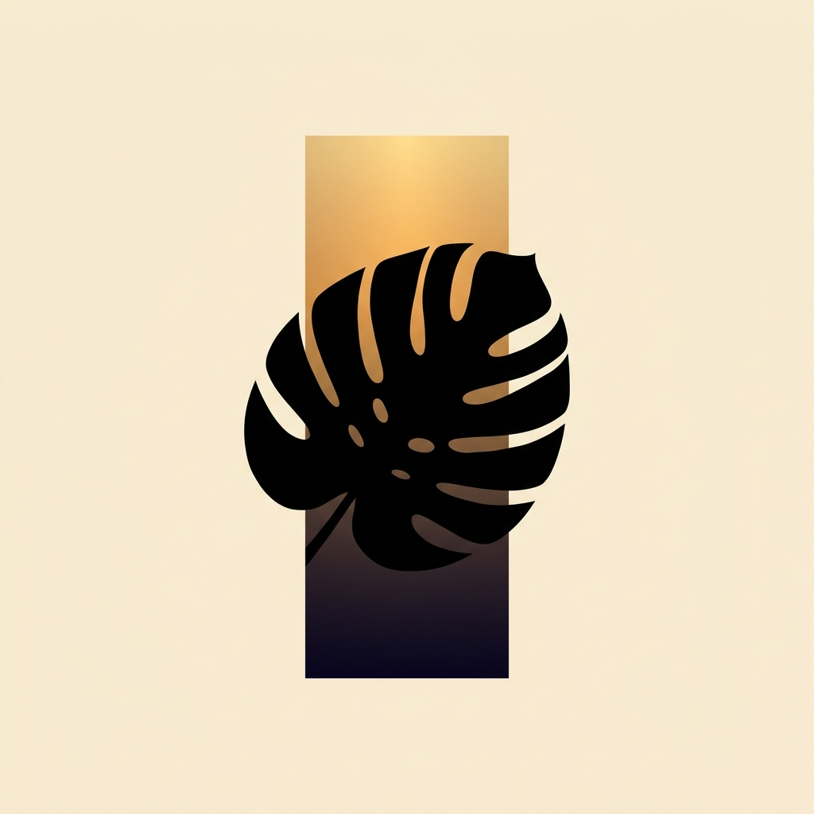

人の目は明るさに対して対数的に順応するため、300lxの部屋も3,000lxの部屋も同じ「明るい部屋」に見えてしまいます。光量ノートは、iPhoneを置き場所に置くだけで3秒ほどでその場所の明るさ（lx）を測り、モンステラ・ポトス・サンスベリア・アガベなど植物ごとに光が「不足／適正／過剰」かを判定するアプリです。判定までは無料。Proでは積算光量のロギングや複数地点の比較、PPFD換算にも対応します。
ライブ測定・明るさクラス・植物ごとの合否判定・光源プリセット・拡散板モード・直近履歴3件は無料でお使いいただけます。処方カード、積算ロギングと1日積算推定、地点の無制限保存・比較、PPFD換算、較正の保存はPro（¥800・買い切り）で解放されます。サブスクリプションではなく、一度のお支払いで恒久的にご利用いただけます。
ご質問・ご要望・不具合報告は、お問い合わせフォームよりお寄せください。
Human eyes adapt logarithmically to brightness, so a 300lx room and a 3,000lx room can look equally "bright." Koryo Note turns your iPhone into a quick light check: set it down where a plant lives, and in about 3 seconds it reads the brightness (lux) and tells you whether it's enough, too little, or too much for that plant — monstera, pothos, snake plant, agave, and more. Judgment is free. Pro (¥800, one-time — not a subscription) adds cumulative-light logging, multi-spot comparison, and PPFD conversion.
Koryo Note estimates brightness from the iPhone camera's exposure data — it's an estimate, not a substitute for a professional light meter. Use it for relative comparisons between spots, not lab-grade measurement.
The app interface is Japanese only.
The app collects no personal data and works fully offline. See the Privacy Policy.